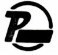

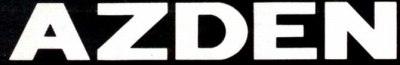
 
PIEZO（ピエゾ）/AZDEN（アツデン）
1952年設立の日本圧電気株式会社（現社名 アツデン）のブランド。社名及びブランド名の由来は圧電素子を用いるセラミックカートリッジ等を得意としたためか。1969年には当時の社長がロウシェル塩圧電素子に関する貢献で、紫綬褒章を受賞している。
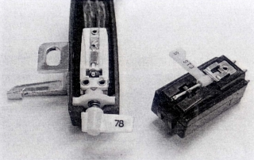
(セラミックカートリッジ ステレオ用針とSP用針を持つ 左がターンオーバー型 右がアツデンのニードルターンオーバー型）
オーディオブランドとしては1975年頃まで、やはり圧電効果にちなんだ「PIEZO（ピエゾ）」をブランド名としていたが、その後「アツデン」に変更、1993年には社名も「アツデン」としている。
アナログ関連製品は、他社のOEMを中心に行っていたが、1970年代後半にはヘッドフォン、マイクロフォンと共にかなり力を入れていた部門であり、自社ブランドの複数のカートリッジの他、アームなども発売していた。
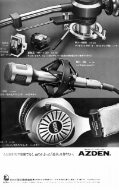
AZDEN （アツデン）の製品を以下のように分類する。（この分類は個人的な意見で、メーカーの分類ではありません）
�T.カートリッジ
主力はIM型だったようだが、MM型も当時ではなかなかの高級機であった。
1.MM型カートリッジ
YM-113はCD-4対応の高級機、YM-130も廉価モデルではない。
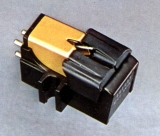
(YM-113)2.IM型カートリッジ
PIEZO（ピエゾ）時代から続くこのブランドのカートリッジの主流。上級機には「トライポール・インデュース・マグネット方式」と呼ぶ国内外に特許を出願した独自形式のIM型があったようだ。
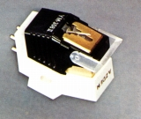
(YM-308�U)（PIEZO（ピエゾ）時代の製品） YM-308�U
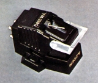
(YM-308Q)(AZDEN （アツデン）時代の製品） YM-305 YM-308Q
�U.トーンアーム
オーソドックスな、Ｓ字型のスタティックバランス型アーム。
（PIEZO（ピエゾ）時代の製品）
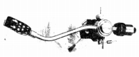
(PIE-20)(AZDEN （アツデン）時代の製品）
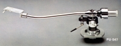
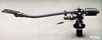
(左 PU-547 右 PU-550)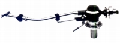
(PU-565)
�V.その他
アームを手がけていた関係で、数点のヘッドシェルやアームリフターがあった。
�@ヘッドシェル
�Aその他